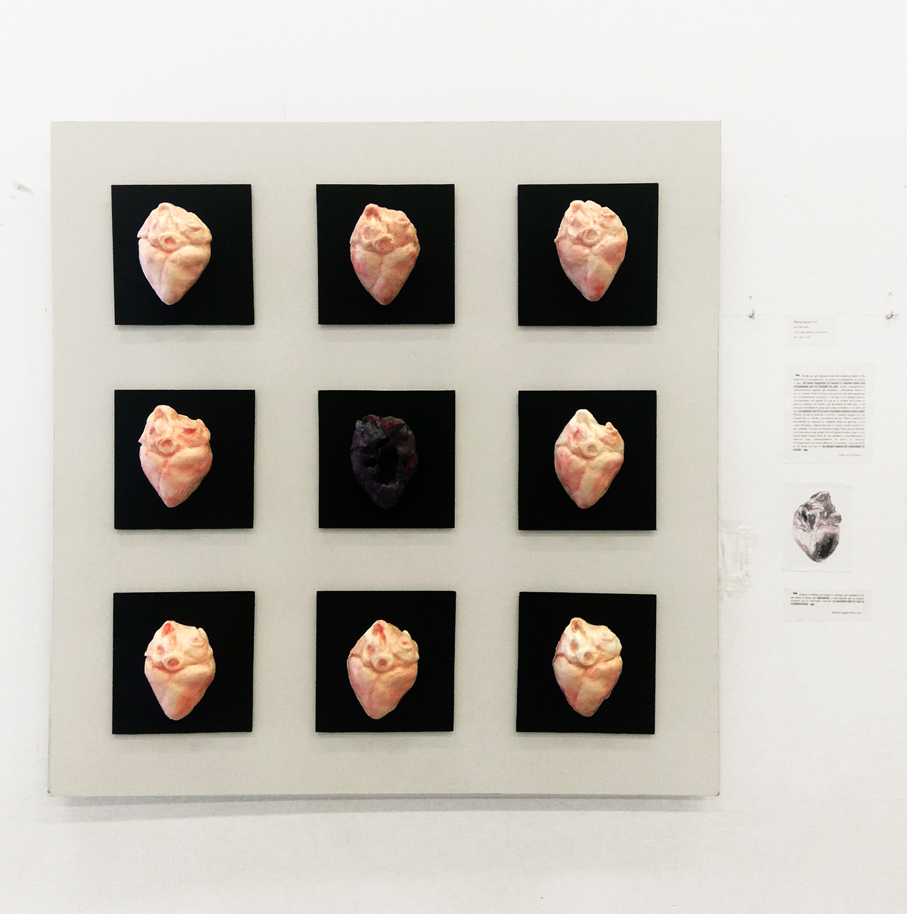

EN VIDA

“Puede ser que alguna senda nos conduzca hasta el fin, junto con el razonamiento, en nuestra investigación, en cuanto a que, en tanto tengamos el cuerpo y nuestra alma esté contaminada por la ruindad de éste, jamás conseguiremos suficientemente aquello que deseamos. Afirmamos desear lo que es verdad. Pues el cuerpo nos procura mil preocupaciones por la alimentación necesaria; y, además, si nos afligen algunas enfermedades, nos impide la caza de la verdad. Nos colma de amores y deseos, de miedos y de fantasmas de todo tipo, y una enorme trivialidad de modo que ¡cuán verdadero es el dicho de que en realidad con él no nos es posible meditar nunca nada! Porque, en efecto, guerras, revueltas y batallas ningún otro las origina sino el cuerpo y los deseos de este. Pues a causa de la adquisición de riquezas se originan todas las guerras, y nos vemos forzados a adquirirlas por el cuerpo, siendo esclavos de sus cuidados. Por eso no tenemos tiempo libre para la filosofía, con todas estas cosas suyas. Pero el colmo de todo es que, si nos queda algún tiempo libre de sus cuidadosos y nos dedicamos a observar algo, inmiscuyéndose de nuevo en nuestras investigaciones nos causa alboroto y confusión, y nos perturba de tal modo que por él no somos capaces de contemplar la verdad.”
-Fedón, 387 a.C, Platón.-
"Cuando la belleza del cuerpo se extinga solo quedará la luz que emite el alma, que será eterna, y todo aquello que no pudiste entender por la distorsión corporal se mostrará ante ti con su verdadera forma."
- Marina Laguna, 2021-